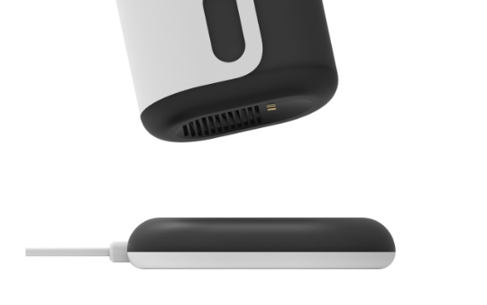
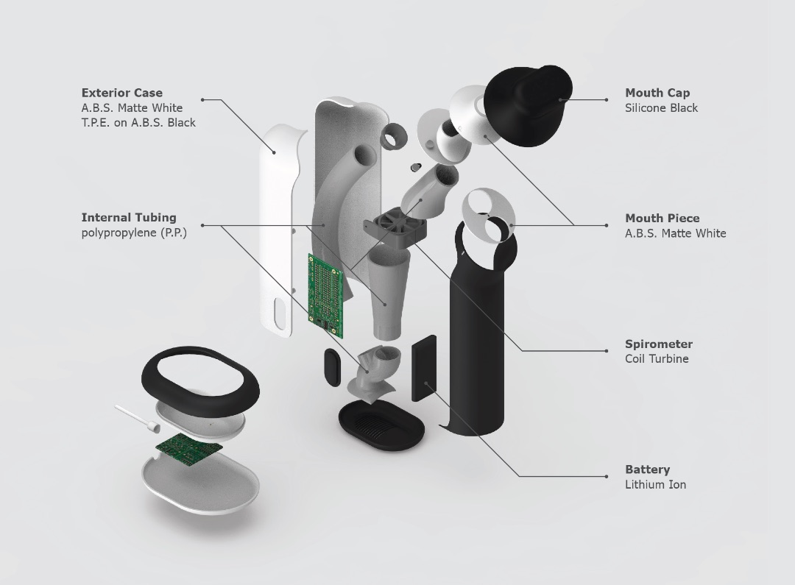
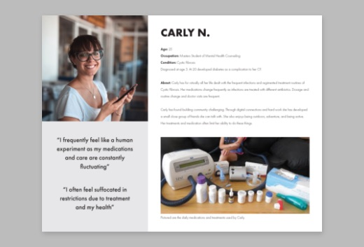
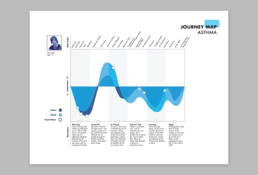
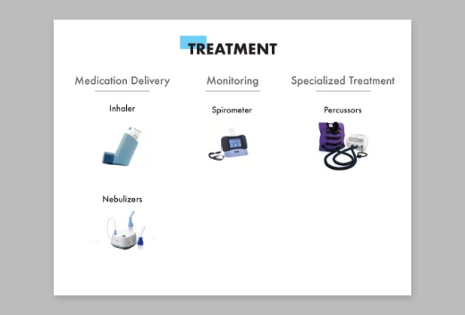
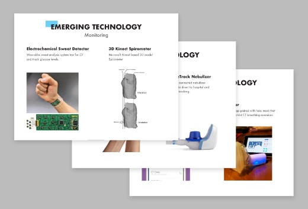

/ Project
Reverv
Chronic respiratory diseases effect millions of people. How might we improve care and treatment for these serious conditions?
Cystic Fibrosis (CF) is a particularly serious genetic respiratory disease and while there is no cure, careful treatment can provide immense benefits in avoiding crises as well as general health of individuals.
Reverv is a treatment tool that focuses on positive expiratory pressure therapy (PEP), and lung capacity monitoring through spirometry. The companion app improves regularity of treatment and benchmarking.
Reverv device with its charging base
Overview
Context
Timeline
12 weeks - Fall 2018
Research Team
Caroline Slick
Blaire Mendel
Instructor
Jason O. Germany
Additional Thanks
Critique from Designers @ Tactile
Prompt
As a Team
Research respiratory diseases and their treatments. How are people effected by these conditions and how are they treated? Identify pain points and challenges in the current treatment regimens.
Individually
Design a product based on the research that addresses challenges in the current treatment methodologies. How can treatment be more effective as well as a better user experience?
Features
PEP + Spirometer
Twist
Switching between the two primary functions is easy. Just twist the mouth piece and to align the the P or S with the tick mark for PEP or Spirometer respectively. The airflow vents out the bottom of the device through a plastic grill.
PEP
The long arcing tube is the PEP device.. It uses technology from the RC coronet, appreciated for its effectiveness.
Spirometer
The second piping on the right uses a coil turbine to measure airspeed for use as a spirometer.
App Integration
Routine + Data
The app allows the user to offload the reminders and task list to a central location. This app walks the user through a simple pairing process (bluetooth) and the treatment regimen. 3 main faces make up the basic functionality with Data to the left of the home page and calendar to the right.
Charging
Bedside Base
The battery life of ReVerv will last multiple days to accommodate unexpected changes in plans. Normally the device should be charged nightly on its base to insure reliable usage. The important use as a PEP device is not depend on power and may be used any time.
Internals + Materials
Process
Research
Duration
3 weeks
Research Team
Caroline Slick
Blaire Mendel
As a team our research started broad and gradually focused onto specific diseases. Ultimately I focused in on CF but it was informed by research on Asthma as well as other diseases. We presented our research as a group to our cohort at the end of the research phase.
Persona
The user we focused on is old enough that they are taking ownership of their own treatment. They enjoy autonomy and being active.
Journey Map
We plotted activity level, mood, and touch points across the daily schedule of a person living with CF. These key elements in the daily routines revealed specific parts of treatment that were particularly disruptive.
Competitive Benchmark
The existing product market for treating respiratory issues we divided into 3 categories: medication delivery, monitoring, and specialized treatment
Emerging Tech
In each of the 3 treatment categories we identified emerging tech from current research as well as recent additions to the product market.
Problem Patterns
Medication Administration
Regularly administering treatment and medications is key for long term success.
Harmful Exposure
CF and other respiratory diseases effect the immune system. Exposure too pathogens is a very important element.
Monitoring
Without regular data collection (hours long doctors visits) treatment can easily remain sub-optimal.
Opportunities
Data
Collecting more data points to base treatment decisions off of can lead to more informed decision making.
Portability
Treatments can become more mobile and delivered with more independence.
Home
Hospital visits are time consuming and disruptive. Home diagnostic tools can limit the number of hospital visits.
Development
Duration
8 weeks
The product development portion of this project was individual with critique from peers, instructors and designers from Tactile.
Ideation
Products
Based on our research I explored a wide variety of possible new treatments for respiratory illness. From refining existing treatments to forward looking concepts with emerging technology. The focus was on improving pain points.
Storyboarding
For the initial concepts I created story boards to demonstrate how the products would integrate daily life into and enable healthier lifestyles.
Design Direction
Spirometer + PEP
I settled on using the RC Coronet as the basic PEP device and through quick CAD modeling explored the form and function of integrating PEP treatment and Spirometry.
RC Coronet
A PEP device that uses a flexible flappable tube that the user blows through to create the vibrations and resistance. Chosen based on users touting its effectiveness and portability. Awkward form factor came up in user reviews.
Sketching
I realized the forms in the quick CAD models above were too restricted to the RC Coronet shape, and didn’t have a good way to switch between functions. Though sketching, I settled on twisting the mouth piece to change function, and explored mush less restricted forms.
App Development
Wireframe Sketches
Phones provide convenient data processing and users can mentally offload scheduled tasks. This makes a companion app a logical choice and important element in the treatment. Developing the user flow began with hand drawn wireframes and simple user flows.
User Flow
Glossing over a lot of the details of the interaction development I settled on the core 3 interaction spaces: Data, Treatment, Schedule. The treatment tab was center and took on the home page functionality. A higher fidelity prototype refined the user flow and highlighted some larger ethical questions that are brought up in the reflection.
Finetuning
At this stage the direct interaction of connecting and using the ReVerv device were ironed out. The user flow included more error direction and user autonomy.
Current Stage
If you would like to check out the current app follow this link here and explore the interaction published through adobe xd.
Live Prototype
Form + Function Refinement
Details
With the core interactions well supported questions of deeper user connection were addressed through iterative sketches. The shape could be a little awkward; How do you keep the cap clean? Where do you keep it? How do you carry it? Some of these questions are still being explored!
Reflection
Taking it Further
Form + Function
While I don’t foresee and motions to further develop this product at the moment I do reflect on the work I do and look for areas that could improve. For Reverv I specifically see two obvious areas that I would address first:
Form - The current method for addressing the embarrassing (slightly phalic) form of this device is with a simple bump on the top end of the device. There is a lot of room for a more elegant solution to this issue.
Cleaning - One of the benefits of the RC coronet functionality incorporated in this product is how easy it is to clean. There isn’t currently an obvious way to clean the insides of this tool.
App Development
Reverv was designed as a system with both physical and digital components. While many aspects of the integration are at a basic level solid there is a large amount of refinement that needs to happen. The most basic question that needs a more in-depth analysis is the privacy of the user. How does this tool interface with medical professionals? What type of analysis of the data can be done in app vs by a personal physician.